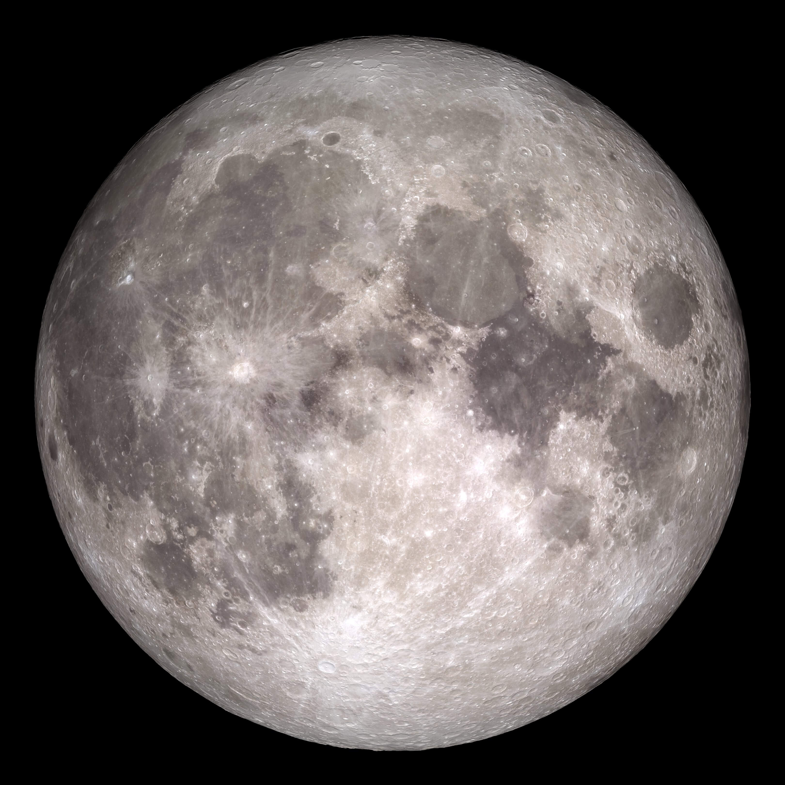
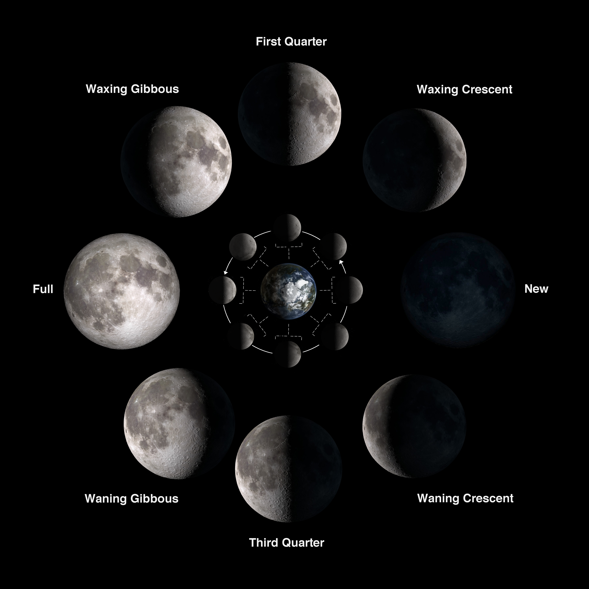

The Moon
Earth's closest companion—and the original night light.
Copyrighted Images


Five Facts About the Moon
- The Moon is Earth's only natural satellite.
- The Moon reflects sunlight rather than producing its own light.
- The Moon's gravity helps produce ocean tides on Earth.
- The Moon rotates once per orbit around Earth, so we always see approximately the same side.
- In 1969, Apollo 11 became the first mission to land humans on the Moon.
Explore the Moon's Phases
As the Moon orbits Earth, we see different amounts of its sunlit half. Use the buttons to explore all eight phases.
New Moon
The sunlit half faces away from Earth, so the Moon is usually not visible.
Phase 1 of 8